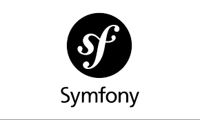

Dans le cadre de mon développement professionnel, je réalise une double veille : technologique et juridique. Celles-ci me permettent d’anticiper les évolutions du secteur numérique et de garantir le respect des réglementations en vigueur.
Veille Technologique
La veille technologique est un processus structuré qui consiste à surveiller et analyser les innovations, outils et tendances émergentes du domaine numérique. Elle permet d’identifier les évolutions techniques majeures, d’adapter ses compétences et d’anticiper les besoins futurs.
Elle repose sur l’analyse de sources fiables comme les blogs spécialisés, documentations officielles, conférences, réseaux professionnels ou encore les annonces des éditeurs. Dans mon cas, cette veille porte particulièrement sur l’évolution du framework Symfony, ses fonctionnalités, ses performances et ses bonnes pratiques.
Veille Juridique
La veille juridique consiste à surveiller l’évolution des lois, règlements, décisions de justice et recommandations des autorités compétentes. Elle garantit le respect du cadre légal, en particulier dans les projets numériques où la protection des données personnelles est essentielle.
Cette veille permet d’éviter les risques juridiques, de prévenir les sanctions et d’assurer la conformité avec les obligations légales, notamment celles liées au RGPD. Mon suivi se concentre sur l’actualité de la CNIL et les sanctions ou recommandations ayant un impact direct sur les entreprises.

Symfony – ReleasesVeille Technologique – Évolution de Symfony
Symfony est un framework PHP professionnel utilisé pour développer des applications web robustes et sécurisées. Depuis 2005, il évolue constamment pour s’adapter aux bonnes pratiques du développement moderne.
- Symfony 2 (2011) – Révolution totale : réécriture complète, apparition du conteneur de dépendances, composants réutilisables, adoption massive de Composer.
- Symfony 3 (2015) – Stabilisation : amélioration du Form Component, documentation enrichie, montée en performance et versions LTS.
- Symfony 4 (2017) – Modernisation : Symfony Flex, recettes automatiques, structure de projet légère, fichiers .env et optimisation du cache.
- Symfony 5 (2019) – Montée en puissance : HttpClient, Messenger amélioré, +40% de performance, meilleure expérience développeur.
- Symfony 6 (2021) – PHP 8 : arrivée massive des attributs PHP, sécurité renforcée, type system modernisé, code plus strict.
- Symfony 7 (2023–2025) – Version actuelle : support PHP 8.2+, performance accrue, optimisation du container, compatibilité renforcée avec API Platform et Turbo.
Outil de Veille – Flux RSS Symfony
Pour suivre en temps réel les prochaines évolutions du framework Symfony (mises à jour, nouvelles versions, annonces officielles), j'utilise le flux RSS du blog Symfony. Cet outil permet de rester informé automatiquement dès la publication d’une nouveauté.
Consulter le Flux RSSSource :
Symfony – Blog officielVeille Juridique – Protection des données (RGPD)
La veille juridique permet de suivre les décisions officielles liées à la cybersécurité et à la protection des données personnelles. Ces informations sont essentielles pour respecter le RGPD.
Le 15 mai 2025, la CNIL a sanctionné la société SOLOCAL MARKETING SERVICES à hauteur de 900 000 € pour démarchage non sollicité et partage illégal de données personnelles. Cette affaire rappelle l’importance de recueillir un consentement clair et de protéger les informations des utilisateurs.
L’enregistrement du son par une caméra de vidéoprotection est interdit par la loi. Néanmoins, l’installation d’un dispositif de captation sonore dans un lieu placé sous vidéoprotection peut être légale, dans des cas très précis(26 mars 2026)
La CNIL souhaite promouvoir des solutions de cybersécurité conformes au RGPD, tant dans leur usage que dès leur conception. Dans ce but, elle publie une recommandation destinée à accompagner les utilisateurs et les fournisseurs de serveurs mandataires web filtrants(13 mars 2026)
Outils de suivi :
-
CNIL –
- CNIL – Communiqués officiels
- Legifrance – Textes réglementaires
- Google Alerts : “RGPD”, “CNIL”, “cybersécurité”
- ANSSI – Recommandations de sécurité